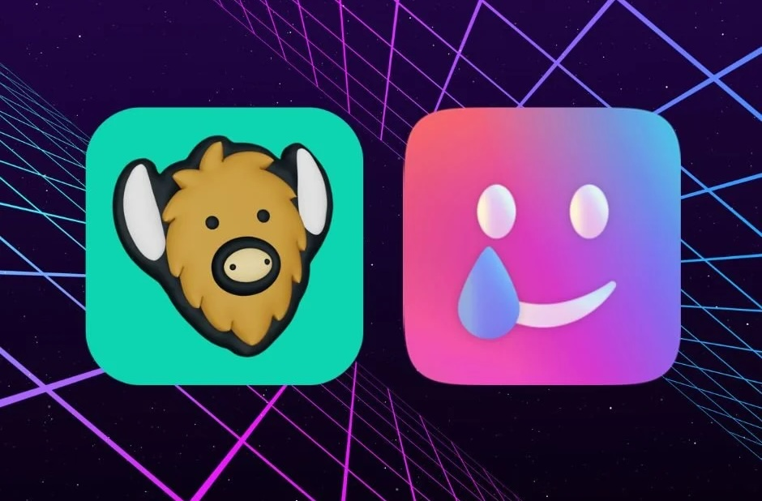
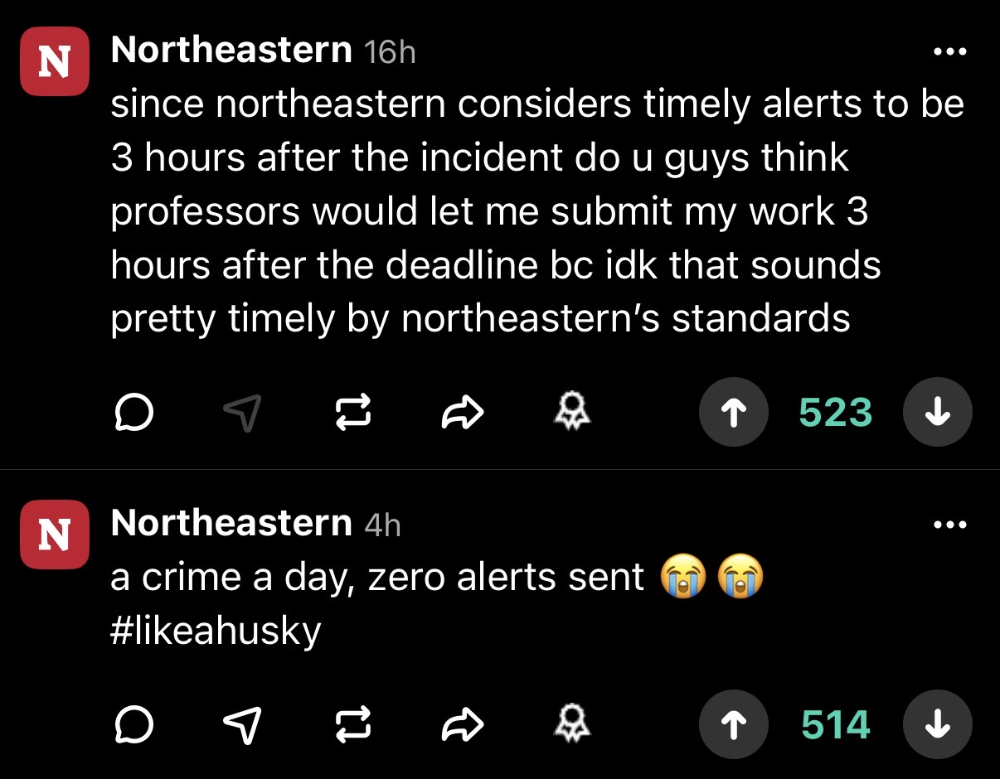

I might not be too far off when I say that many of us have received urgent, stressful texts to check YikYak or Sidechat about the recent violent events on campus. Scrolling through the posts shows an array of people talking about what happened, opinions on campus security effectiveness, and more. For those who don’t know, YikYak or Sidechat is an app that functions as a pure text/upvote social media platform, but limits communities to university campuses by requiring email verification for specific schools. This creates a connected network between a school campus and a completely anonymous post format, sparking discussion on current events directly tied to the university and its student body. (Sidechat and YikYak are the same app/servers, but I will refer to it as Sidechat for simplicity from now on)


The posting format of Sidechat directly feeds into what Sunstein defines as group polarization. Each comment has an upvote tally that directly ties to how fast other students see the post. This means that the algorithm of the app relies directly on how much other students agree with the post, feeding into the group mentality. Additionally, what Fallis talked about in the lecture, human nature will naturally amplify and push opinions to the extreme when talking with a group. Sidechat is an example of how information technology amplifies this by making this group connection more accessible and faster. Lastly, the anonymity of Sidechat, not having any identity tied to posts, frees people to exaggerate posts or vocalize more extreme positions without risk of pushback, which feeds even more into the polarization and extreme viewpoints of the group.